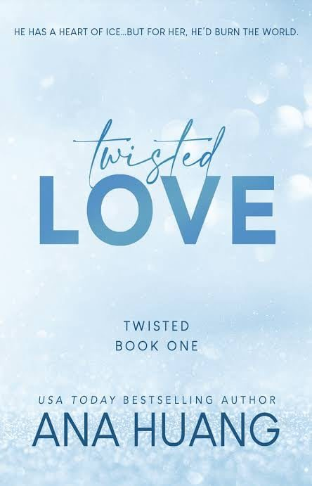

Twisted Love
Synopsis
A kind-hearted photography student and her brother’s ice-cold best friend slowly discover that they have more in common than they thought.
Stranded in the Rain
Summary of chapter 1
Ava, a college student and part-time photographer, is stranded at a bus shelter in a rainstorm after a shoot, with no ride in sight. Reluctantly she calls her overprotective older brother Josh, who is busy at his own farewell party and sends one of his friends to pick her up.
The friend turns out to be Alex Volkov, Josh’s cold, brilliant and extremely wealthy best friend, whom Ava has known for years but never warmed to. The drive is full of silence and sarcasm. She talks him into a detour to pick up Josh’s surprise cake, he points out that her wet shirt has turned see-through, and he goes into the bakery himself.
They trade insults all the way home, and Ava steps out of the car irritated, relieved that she will rarely have to see him.